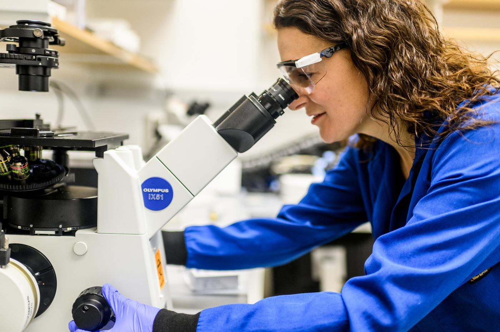

Scientific
Board
Our Clinical Advisory Board
Guiding our sourcing, research audits, and educational outputs to align with modern nutritional sciences.
Dr. Liam Zhao, PhD
Microbial Genomics LeadDr. Zhao holds a doctorate in microbiology and conducts sequencing evaluations on lacto-ferment species populations.

Dr. Sarah Sterling, MD
GastroenterologistDr. Sterling has practiced clinical gastroenterology for 15 years, integrating dietary live foods into patient care guidelines.

Maya Patel, RD, LDN
Clinical NutritionistMaya designs dietary pairings, verifying nutritional data integrity and gut health digestive protocols.